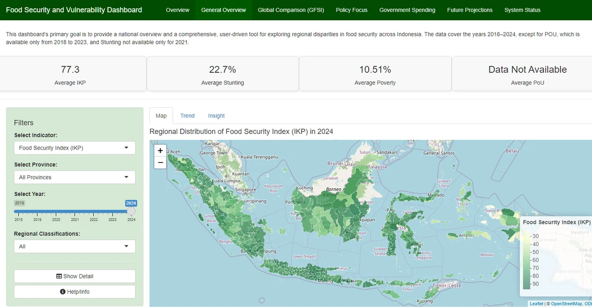
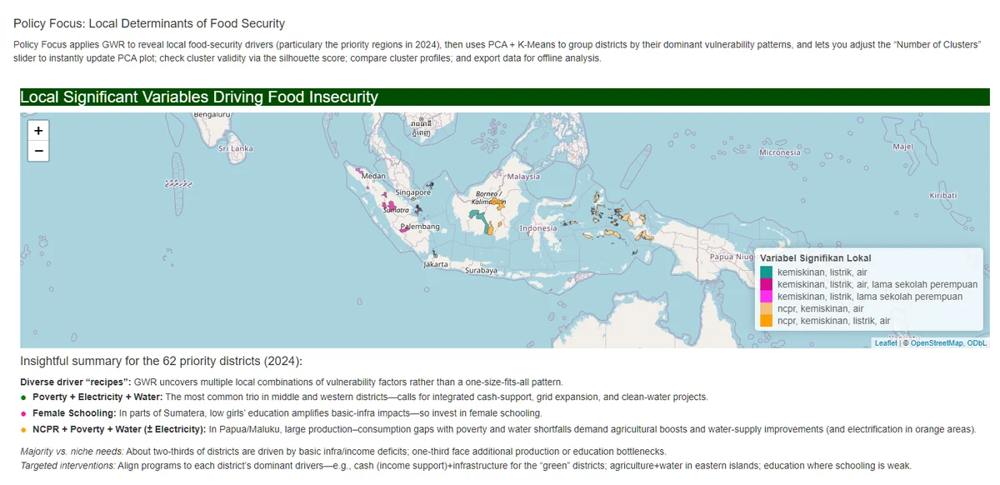
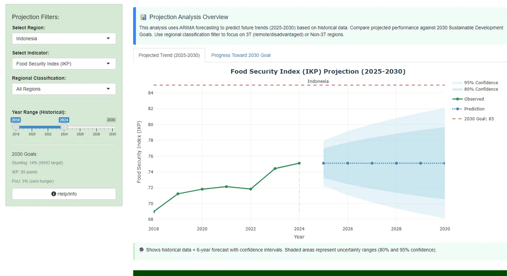
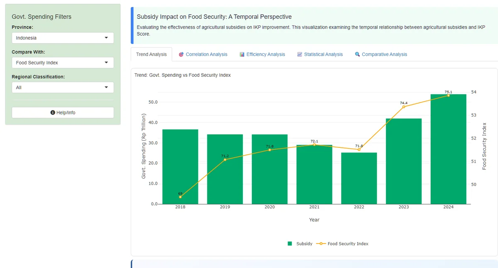
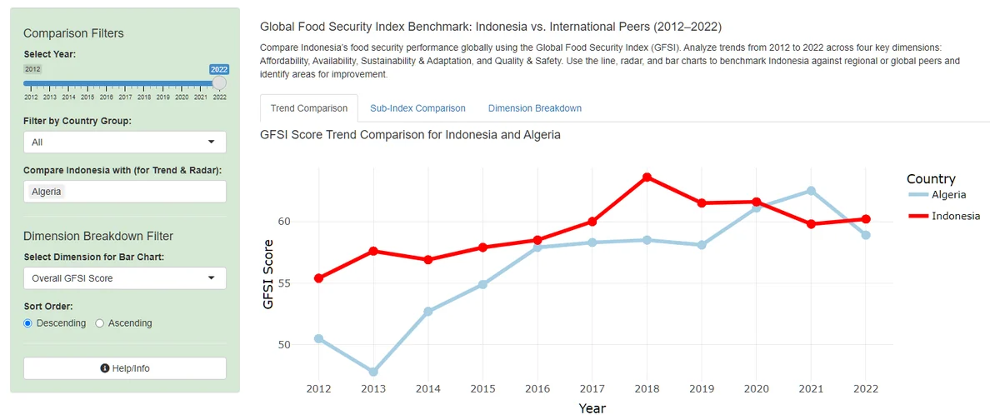

Home / Projects / Food security dashboard
Regional food security and vulnerability dashboard, Indonesia (2018-2024)
- Period
- 2018-2024regency and city level, plus national GFSI indicators
- Indicators
- Food security index, stunting, undernourishment, poverty
- Projections
- To 2030against 2030 goals: IKP 85, stunting 14%, PoU 5%
01Who it is for and what it answers
The dashboard is designed for policymakers, regional planners, public-health officials and analysts working on food security. It was built around three questions: which regions are priorities and what drives their vulnerability, how have trends changed and how do they compare globally, and which regions are on track to meet 2030 goals (a food security index of 85, stunting of 14% following the WHO target, and undernourishment of 5%, the zero-hunger level).
02Seven tabs
- Overview. The three research questions and which tab answers each.
- General overview. A district map, trend lines and written insights for the food security index, stunting, poverty and undernourishment, filterable by province, year and regional classification (island regions, 3T regions).
- Global comparison. Indonesia against international peers on the Global Food Security Index.
- Policy focus. Geographically weighted regression, shown as a map, to find which socioeconomic variables are locally significant drivers of food security in priority districts rather than assuming one national relationship. PCA and K-Means then group districts by their dominant drivers, with an adjustable number of clusters, a silhouette score, cluster profiles and a CSV export.
- Government spending. The relationship between agricultural subsidies and the food security index over time.
- Future projections. ARIMA forecasts of the food security index, stunting and undernourishment for 2025-2030, with 80% and 95% confidence bands, flagging regions at risk of missing the 2030 goals.
- System status. Data-quality checks and an error log.
03Design and data decisions
The interface follows the Five Design Sheets framework, from raw data through to the final layout, so that each tab has a clear purpose and a consistent visual hierarchy for different audiences. The team fixed problems found during testing and cross-checked them in Shiny: zeros in the stunting and undernourishment data were recoded as missing values, with conditional rendering so that charts do not average over missing data, and a projection chart title and axis range that disagreed were corrected.
Code: Shiny app and user guide on GitHub. Live: anurulhamzah.shinyapps.io (free plan, so the first load after idle can take about ten seconds). The datasets are bundled with the hosted app only, not in the repository. This was a team project; the report does not attribute individual contributions.
Three of the tabs, from the live app (select an image to open it):




